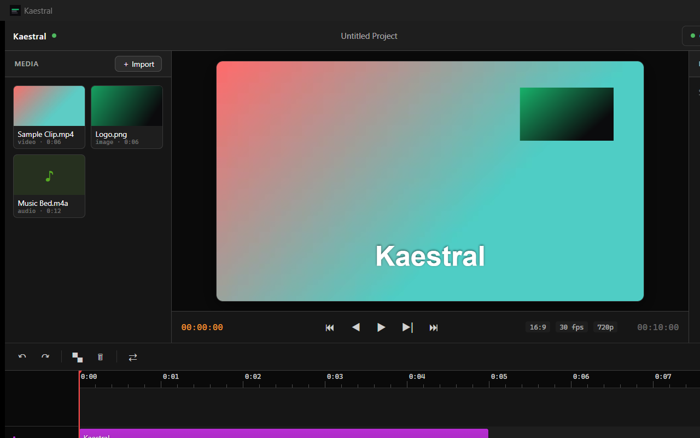

You describe the edit. It makes it. Kaestral watches your footage, hears every word, and cuts.
Free·GPLv3·Works with the Claude Code you already have
Type “cut the boring parts, add captions, punch in on the hook” — and watch your timeline change. Every action runs through the editor’s own tools, so you get a real, editable project, not a black-box render. Drive it with Claude Code (free) or the in-app chat.

Drop a 20-minute recording; get a tight, captioned, beat-cut short. Kaestral removes filler words, finds the hook, and captions on the word — automatically. Transcription runs on-device; cuts land on silences and beats.
Animated intros, logo reveals, data-viz, and transition stingers — generated from a sentence and rendered onto your timeline. Launch videos, demos, and ads, without hiring an editor.
No project setup, no timeline tutorial. Install, connect, and start describing the edit you want.
Download the Windows installer and run it. The editor and its engine start together — nothing else to configure.
One command connects the Claude Code you already have. Requires Node/npm and FFmpeg on your PATH.
claude mcp add kaestral -- npx kaestral
Type what you want in plain language — “cut the dead air and add captions” — and watch the timeline do it.
Screen recording in, launch-ready demo out — intro, captions, punch-ins, an outro CTA.
One long recording becomes several vertical, captioned, beat-cut shorts for every platform.
Filler removed, hook up front, captioned on the word, punched in on the punchline.
Native to Windows, free, and open source. It doesn’t just take commands — it watches your frames, hears every word, and edits through a real, editable timeline.
| Kaestral | What that means | |
|---|---|---|
| Platform | Windows | Native desktop app · macOS on the roadmap |
| AI editing over MCP | ✓ | Drive it from the Claude Code you already have |
| Perception | ✓ on-device | Transcribe · see frames · detect beats & silence — locally |
| Real timeline | ✓ | Multi-track, keyframes, blend modes — a true editable project |
| Price | Free · GPLv3 | Open source; yours to keep and modify |
| AI generation | ⏳ Pro (waitlist) | Prompt-to-clip is coming to the Pro tier |
Kaestral doesn’t compete on generation today — its edge is Windows + real perception + a free, open, Claude-Code-native workflow. Generation lands later, in the Pro tier.
Kaestral is local-first. Your video, audio, and project files are processed and stored on your machine — never uploaded to a server. Transcription, vision, and beat detection all run on-device.
Footage & projects — read, edited, and rendered locally. Nothing is synced to the cloud.
Transcription, vision, beat & silence detection — all run on-device, not through a remote API.
GPLv3 — the code doing this is auditable. See exactly what runs and where.
Two things — and only two — leave your device: your AI prompts, sent to Anthropic’s API if you use in-app chat with your own key; and your email, sent to our form provider only if you join the Pro waitlist below. Everything else — your video, audio, and project files — stays on your machine.
Kaestral is an MCP server. Point the Claude Code you already have at it and start editing by prompt — no new app to learn.
# one command — connects Claude Code over stdio claude mcp add kaestral -- npx kaestral claude # then just ask # “cut the silent parts of demo.mp4, # add captions, and export it.” # prefer HTTP? the editor app also exposes: # claude mcp add --transport http kaestral \ # http://127.0.0.1:19789/mcp
claude mcp add kaestral -- npx kaestral — one command, no server to run manually. Requires Node/npm and FFmpeg on PATH.
Double-click; the editor and engine start internally — no terminal.
Bring your own Anthropic key and edit from the app window.
Standard MCP over stdio or HTTP with a stable tool contract. Exports Premiere (XMEML) and Resolve / FCP (FCPXML).
Type a prompt, get a real clip on your timeline. Generate video, images, and B-roll inside Kaestral. Join the waitlist — we’ll email you the moment it opens.